O sistema de identidade da BioBrz Consultores — boutique de consultoria tributária e auditoria independente. Quinze anos construindo em silêncio.
Três versões oficiais. Use cada uma sobre o fundo correto para garantir contraste e integridade. Nunca recrie, recolore ou distorça.
A integridade do logotipo é inegociável. Nunca aplique nenhuma destas alterações.
Uma releitura sofisticada da bandeira brasileira. Verde ancora, ouro acentua, off-white respira, azul refina, preto comanda.
Clique em qualquer cor para copiar o HEX.
Um único sistema tipográfico. Geométrica, sem serifa — uma ruptura deliberada com o setor contábil conservador. A hierarquia nasce do tamanho e do espaçamento, não do peso.
Ícones de interface geométricos — traço de 2px, cantos retos. Todos em SVG com currentColor. Clique em qualquer ícone para baixá-lo.
Dois direcionamentos. Tons quentes, sem alta saturação, sem preto e branco. Perfis maduros, postura intencional, luz com propósito.
Foco e ação. Tom frio e cinematográfico, recortes fechados, luz dramática.
“Estar em boas mãos”. Tom quente, luz natural, posturas abertas, perfis maduros.
Prompts prontos para Midjourney, DALL·E ou Firefly. Clique em qualquer bloco para copiar.
Autoridade e precisão de uma casa de alto padrão. Impacto primeiro, evidência depois. Nunca prolixa, nunca casual, nunca com emoji.
"Todo patrimônio carrega uma história. A BioBrz lê o que os outros não sabem ver."
"Não é um escritório de contabilidade. É uma casa de alto padrão."
"Quinze anos construindo em silêncio. Agora, com a voz que merece."
Decks e templates oficiais em Google Slides. Abra o link para visualizar, editar ou fazer uma cópia.
Cartão de visita, papéis timbrados, envelopes e pasta. Baixe os arquivos prontos para impressão ou edição.
Logotipos, ícones e tipografia prontos para uso. Cada pacote inclui um guia rápido de aplicação.